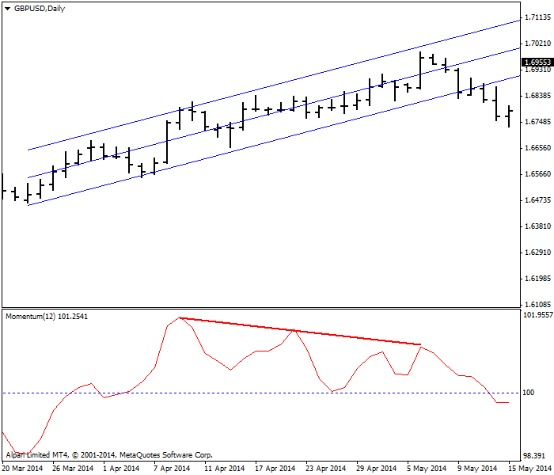
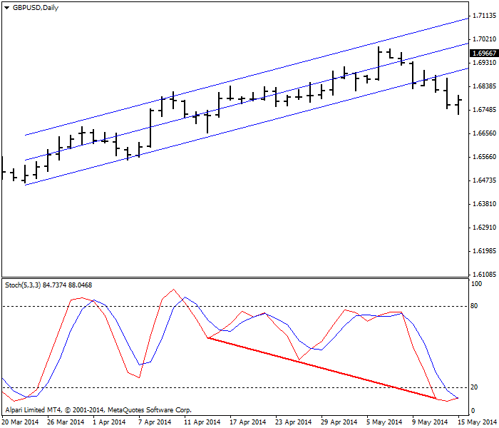
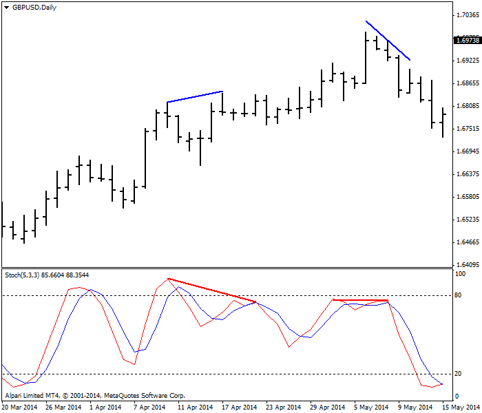
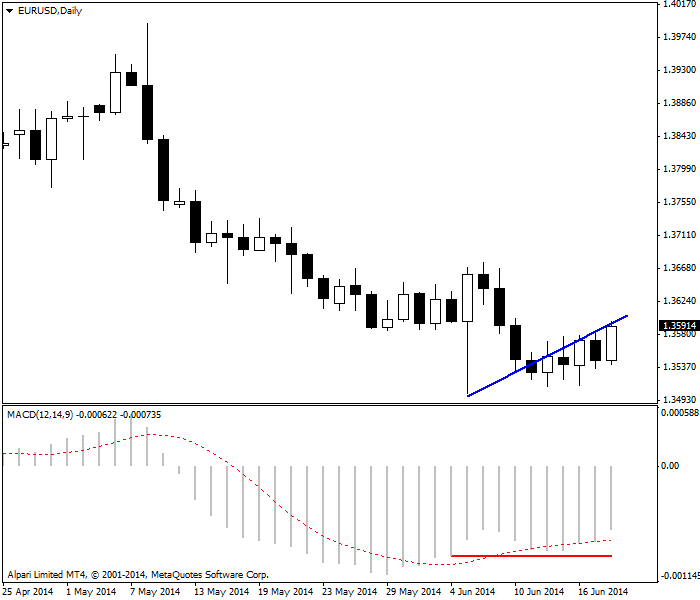

<!DOCTYPE html>
<html>
</html>
<head>
  <meta charset="utf-8">
  <meta http-equiv="X-UA-Compatible" content="IE=edge">
  <title>外汇站（fx-z.com） - 背离交易</title>
  <meta name="description" content="">
  <meta name="viewport" content="width=device-width, initial-scale=1">
  <meta name="robots" content="all,follow">
  <!-- Bootstrap CSS-->
  <link rel="stylesheet" href="vendor/bootstrap/css/bootstrap.min.css">
  <!-- Font Awesome CSS-->
  <link rel="stylesheet" href="vendor/font-awesome/css/font-awesome.min.css">
  <!-- Google fonts - Roboto-->
  <link rel="stylesheet" href="https://fonts.googleapis.com/css?family=Roboto:400,300,700,400italic">
  <!-- owl carousel-->
  <link rel="stylesheet" href="vendor/owl.carousel/assets/owl.carousel.css">
  <link rel="stylesheet" href="vendor/owl.carousel/assets/owl.theme.default.css">
  <!-- theme stylesheet-->
  <link rel="stylesheet" href="css/style.default.css" id="theme-stylesheet">
  <!-- Custom stylesheet - for your changes-->
  <link rel="stylesheet" href="css/custom.css">
  <!-- Favicon-->
  <link rel="shortcut icon" href="img/favicon.png">
  <!-- Tweaks for older IEs--><!--[if lt IE 9]>
    <script src="https://oss.maxcdn.com/html5shiv/3.7.3/html5shiv.min.js"></script>
    <script src="https://oss.maxcdn.com/respond/1.4.2/respond.min.js"></script><![endif]-->
</head>
<body>
  <div id="all">
    <div class="container-fluid">
      <div class="row row-offcanvas row-offcanvas-left"> 
        <!--   *** SIDEBAR ***-->
        <div id="sidebar" class="col-md-4 col-lg-3 sidebar-offcanvas">
          <div class="sidebar-content">
            <h1 class="sidebar-heading"> <a href="https://fx-z.com">fx-z.com</a></h1>
            <p class="sidebar-p">介绍外汇相关的基本知识，告诉您如何进行自己的技术面和基本面分析，讲解先进的交易理念，并且为您阐述失败交易者与专业交易者之间的真正区别。 </p>
            <p class="sidebar-p">通过这些课程的学习，您将学会如何根据自己的优势来应用情绪分析，还将了解真实世界的事件会对货币汇率产生什么影响，央行在外汇市场中所发挥的作用，以及交易者在颇受欢迎的即期外汇交易中有哪些选择方案。 </p>
            <ul class="sidebar-menu">
                <!-- Link-->
                <li class="sidebar-item"><a href="https://fx-z.com" class="sidebar-link">首页</a></li>
                <!-- Link-->
                <li class="sidebar-item"><a href="cihui.html" class="sidebar-link">外汇词汇</a></li>
                <!-- Link-->
                <li class="sidebar-item"><a href="ebook.html" class="sidebar-link">获取外汇电子书</a></li>
            </ul>
            <p class="social"><a href="https://www.cn-forextime.com/zh?partner_id=4920383" target="_blank"data-animate-hover="pulse" class="external facebook"><i class="fa fa-eur"></i></a><a href="https://www.cn-forextime.com/zh?partner_id=4920383" target="_blank" data-animate-hover="pulse" class="external gplus"><i class="fa fa-gbp"></i></a><a href="https://www.cn-forextime.com/zh?partner_id=4920383" target="_blank" data-animate-hover="pulse" class="external twitter"><i class="fa fa-rmb"></i></a><a href="https://www.cn-forextime.com/zh?partner_id=4920383" target="_blank" title="" class="external instagram"><i class="fa fa-dollar"></i></a><a href="https://www.cn-forextime.com/zh?partner_id=4920383" target="_blank" data-animate-hover="pulse" class="email"><i class="fa fa-money"></i></a></p>
            <div class="copyright text-center text-md-left">
             
              
            </div>
          </div>
        </div>
        <!--   *** SIDEBAR END ***  -->
        <!--   *** DETAIL ***-->
        <div class="col-md-8 col-lg-9 content-column white-background">
          <div class="small-navbar d-flex d-md-none">
            <button type="button" data-toggle="offcanvas" class="btn btn-outline-primary"> <i class="fa fa-align-left mr-2"></i>菜单</button>
            <h1 class="small-navbar-heading"> <a href="https://fx-z.com/10-1.html">下一篇 </a></h1>
          </div>
          <div class="row">
            <div class="col-xl-10">
              <div class="content-column-content">
                <h1>背离交易</h1>
    <p>
    将背离理念作为交易指南的历史已有几十年，而且这一理念得到了平滑异同移动平均线 （MACD）发明者 Gerald Appel 的推广。近年来，背离交易已经被更频繁地作为一种独立或近乎独立的技术而提起。
</p>
<p>
    请注意，在外汇中，我们是指价格价值背离价格动量，而不是指价格背离交易量，也可以指一种货币价格背离另一种货币价格，或者一种价格资产背离另一种资产价格。这三者均能被称为“背离交易”。在股市中，交易量背离价格也是一个极有价值的工具。当价格创新高，而成交量低迷或下跌时，涨势较为疲软。可惜的是，我们在即期外汇方面没有可靠的交易量统计数据。
</p>
<p>
    经典背离交易的核心理念是指动量引导价格。当动量逆转方向时，我们预计价格也将跟随逆转。如果价格上涨，而动量开始下跌，这说明我们遇到了一个空头背离。当价格下跌，而动量开始上涨，这说明出现了多头背离。背离越大，价格跟随动量的可能性也越大。背离的持续时间越长，最终的价格逆转越大：背离几小时可能没有意义，但背离几天或几周将更加可靠。如果您根据与价格方向相反的动量而创建新头寸，这意味着您面临着极大的风向，而且时间周期越短，意味着风险越大。
</p>
<p>
    参见 2014 年 4 月 GBP/USD 每日图。蓝线为线性回归线，而窗口底部的红线只是一条将动量高点连接起来的线。该图表向您简单展示了价格与动量背离，用于提醒您上涨走势即将结束。寻求背离时，您可以使用包括 MACD、RSI 和 随机震荡指标在内的任何指标值。外汇中最常见的指标为随机震荡指标，原因或许在于与 MACD 相比，它在更短时间周期上的表现更好。
</p>
<p>
     GBP/USD 背离，其 12 日动量预示上涨趋势结束。
</p>
<p>
    例如，请查阅下图。请注意，随机指标放大了每个趋势中所嵌入的动作/反应“波浪”。您可以自行决定是否希望在这些波浪中见到斐波那契数列。请记住，当强趋势持续很久时，随机震荡指标将显示货币被大量超买或超卖。在持续较久的趋势中，随机指标的方向逆转是非常不可靠的。
</p>
<p>
     GBP/USD 与随机震荡指标相背离给出了同样的信号。
</p>
<p>
    下图介绍了一个新的因素——将一系列高点或低点连接起来的线条的斜率。如下图所示，您可以绘制一条将最高点和最低点连起来的线条，或者使用上图的线性回归线，以此来预计走势的斜率。无论您采用哪种线条，这并不重要，因为您寻找的是一个强劲的斜率，且该斜率与另一个方向相反、动量减小的斜率相匹配。下图左侧背离的幅度与价格斜率的幅度大致相同，右侧的随机指标斜率为水平方向，而价格斜率向下倾斜。这说明什么？这意味着背离结束，您需要通过其他方法来寻找方向。因为现在，您已经知道上一个高点是虚高的，而价格方向是向下的，您可以通过预计指标斜率来确认新的即将进入的下行方向。
</p>
<p>
     在同一张 GBP/USD 每日图上对比斜率
</p>
<p>
    实际上，指标线的水平斜率意味着动量已经归零。如果有时候会产生歧义，这是一则好消息，因为动量是一个领先指标。请参见 2014 年 6 月 EUR/USD 每日图价格与 MACD 同步下跌，但下探最低点后，价格继续出现一系列逐步走高的低点，而 MACD 持平。持平与逐步走高的低点仍是一种背离形式，因为 MACD 持平意味着动量停止下跌。动量并没有上升，但如果您愿意冒风险，那么在该点进入多头头寸不失为一种较好的选择。了解最低点的潜在情况以及欧元交易者拒绝试探该点的原因是很有帮助作用的。
</p>
<p>
     此 2014 年 6 月每日图上，EUR/USD 未出现与 MACD 的较大背离。
</p>
<p>
    一些分析师希望价格触及三次高点，而指标出现三次低点，或者反之亦然；这种情况被称为“1-2-3 背离交易”。而一些分析师更加极端，提出了多种背离类型，包括“隐藏”背离和其他花哨的无用类型。这些类型全部只是被发明出来，以适用于价格与动量方向相反的核心理念。请不要被吓到。
</p>
<p>
    不过，如果未经过其他指标或基本面确认，请勿进入背离交易。
</p>
<p>
    <br/>
</p>
<p>
    <br/>
</p>
              </div>
            </div>
          </div>
        </div>
      </div>
    </div>
  </div>
  <!-- JavaScript files-->
  <script src="vendor/jquery/jquery.min.js"></script>
  <script src="vendor/popper.js/umd/popper.min.js"> </script>
  <script src="vendor/bootstrap/js/bootstrap.min.js"></script>
  <script src="vendor/jquery.cookie/jquery.cookie.js"> </script>
  <script src="vendor/owl.carousel/owl.carousel.min.js"></script>
  <script src="vendor/masonry-layout/masonry.pkgd.min.js"></script>
  <script src="js/front.js"></script>
</body>